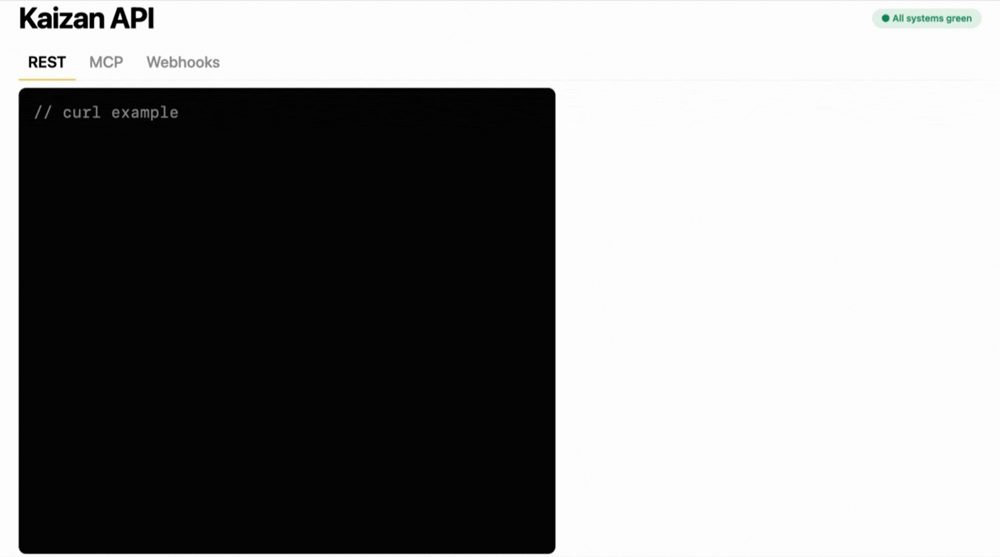
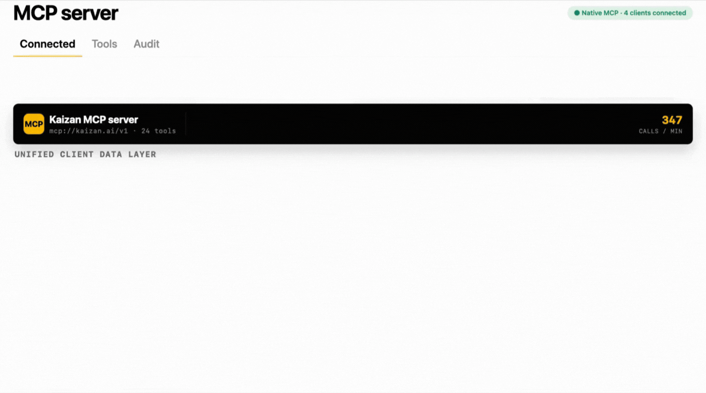
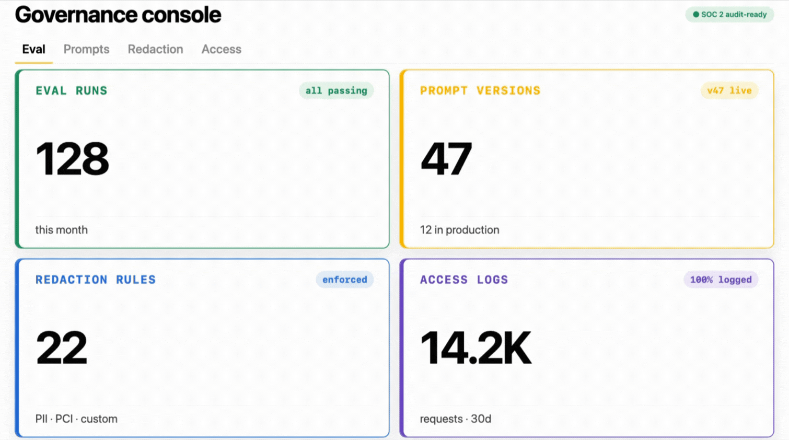

FOR · HEAD OF AI / CTO
Your client brain. In the AI tools you already use.
Turn every meeting, email, and decision into a unified client brain your AI tools can query - and a foundation for the custom products, services, and workflows your business wants to build.
We have this huge dataset now… we can start making not just client decisions, but product decisions.
Corin Ward
Director of AI
Tradedoubler
Why AI and technology leaders love Kaizan
The things AI and Technology Leaders love.
01
Your client brain, in the AI tools you already use.
Every meeting, email, decision, and signal - unified and queryable via MCP from Claude, ChatGPT, or whatever model your org has standardised on.
02
Build your own products, services, and workflows on top.
The API gives you a full data layer to build custom client-facing products and internal workflows - without rebuilding the ingestion and unification work yourselves.
03
Enterprise-grade controls.
SSO/SAML, custom retention, data residency - the controls procurement asks about, available from day one.
How Kaizan helps
The platform layer your team would have to build - already built.
01
Kaizan API
RESTful and MCP endpoints for every primitive: clients, conversations, signals, drafts, scores. Drop into your existing internal tools.

02
MCP server
Native MCP - any LLM your org has standardised on can query the unified client data layer without bespoke glue.

03
Governance console
Eval runs, prompt versions, redaction rules, access logs. Everything your security review will ask for, in one place.

FAQs
The questions AI and technology leaders ask us.
Can I connect my own LLM via MCP, and what does the schema look like?
Kaizan supports MCP natively - any LLM that speaks the protocol can query the unified client data layer, regardless of which model your org has standardised on. We share the schema and example queries in a technical session so your team can scope what they'd build first.
What can teams actually build on top of the API - any examples?
The API is on every tier from Team upwards. Customers use it for internal copilots that answer questions about a specific client, client-facing portals that pull live status, custom reporting into the BI tools they already run, and workflow automation across CRM, comms and project tools - anywhere the unified client data layer is useful.
Where is data stored, and what data residency options do you offer?
Data residency is available at Enterprise tier. We support deployments in the regions our customers operate in; specifics depend on your tier and where your clients sit, and are confirmed in contract.
What’s your SOC 2 / ISO 27001 / GDPR posture?
Kaizan is built for enterprise procurement and the controls security and compliance teams expect - SSO/SAML, custom retention, and data residency at Enterprise tier. We share the full posture, certifications and reports under NDA so your security review has what it needs.
Not quite you?